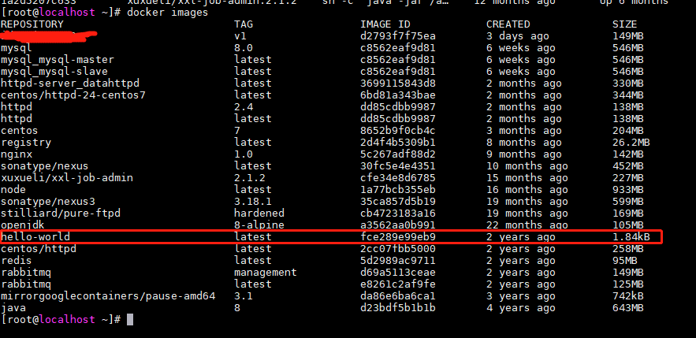
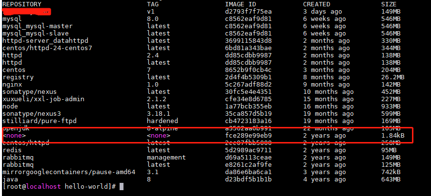

前提：服务器已安装docker环境
1.从源服务器docker镜像仓库获取镜像id待用
1 | docker images |

2.将镜像仓库的指定镜像打包至指定目录生成文件
1 | docker save 镜像id > /source/mynewimage.tar |
3.将镜像文件复制到新的部署服务器指定目录中，载入镜像至目标服务器的docker镜像仓库中
1 | docker load < /target/mynewimage.tar |
4.此时查看目标服务器镜像仓库会发现镜像载入了，但是没有镜像名称和版本号等信息
1 | docker images |

5.为载入镜像打上版本号，镜像id与源服务器的镜像id一致
1 | docker tag 镜像id 镜像名称:版本号 |